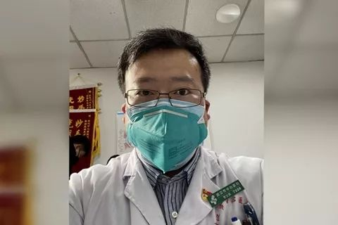

对话“传谣”被训诫医生：我是在提醒大家注意防范
原文链接 备份链接 “如果当时大家都重视这个事情，或许不会有今天的疫情暴发。”李文亮说。 全文2320字，阅读约需4分钟 事发近一个月后，武汉公布疫情的8名“造谣者”，被中国疾控中心流行病学首席科学家曾光，称赞为“事前诸葛亮”。 其中一 …

34岁的李文亮是武汉市中心医院一位眼科医生，他率先披露不明肺炎有关情况，被截图转发而后受到单位约谈、警方训诫。在接诊过程中他自己被感染，多名同事和父母也被感染。图由受访者提供
武汉医生李文亮率先披露不明肺炎有关情况，受到单位约谈、警方训诫。他不清楚自己是不是被查处的八名“造谣者”之一。他说，让大家知道真相比自己平反更重要，一个健康的社会不应该只有一种声音
文 | 记者 覃建行
入院18天后，李文亮终于知道了自己的核酸检验结果为阴性，这对他而言是一个好消息。他至今仍然躺在武汉市中心医院呼吸与重症医学监护室的隔离病房里，生活起居要靠医生护士照料。
结果，而是顶着“不明原因肺炎”的名头接受治疗。这是一种现在已被证明具备“人传人”特征的传染病，引发的疫情仍在加速蔓延。截至1月30日24时，中国确诊病例9692例，现有疑似病例15238例。
李文亮是武汉市中心医院的一名眼科医生，当这一特征尚不明确时，他试图将工作中获知的危险告诉同学，却不想“倒霉地”做出了一个“违法行为”。
一个月前的12月30日17时48分许，李文亮在一个150人左右的同学群中发布信息称：“华南水果海鲜市场确诊了7例SARS，在我们医院急诊科隔离”。同一天，武汉市卫健委印发的《关于做好不明原因肺炎救治工作的紧急通知》也在网络上流传，其中要求严格信息上报，并强调“未经授权任何单位，个人不得擅自对外发布救治信息”。
李文亮在微信群里的提醒揭开了口子。一名群友将他的对话截图发上了网络，而且没有隐去最关键的信息：他的名字和职业。这让看到截图的人精准地找到了他，不久他即被医院监察科约谈，并在1月3日到辖区派出所签了一份对“违法问题”警示的《训诫书》。
1月20日后，随着新冠肺炎疫情迅猛发展，这位曾被警方定性为发布不实信息的人，其本人的遭遇又被视为这次疫情中前线医护人员的注脚：在接诊过程中自己被感染，病情一度恶化进了ICU。此外，他的多名同事和父母也感染了新型冠状病毒肺炎。
当公众追溯疫情源头才发现，原来早已有人预警，李文亮因其截图上的实名又成为了能被找到的“吹哨人”。他说，自己当时只是想提醒同学，并没有想那么多，截图被传播出去后还曾一度生气，但体谅公众出于担忧公共卫生状况也就释然了。而现在是否给他平反已经不那么重要，因为真相比这更加重要，一个健康的社会不应该只有一种声音。
与李文亮一起引发关注的还有武汉警方此前通报的八名造谣者，他们被查处的消息一度上了央视新闻。李文亮说，并不清楚自己是不是八人之一。财新记者注意到，武汉市公安局官方微博“平安武汉”第一次通报已传唤八名违法人员是在1月1日17时38分，而李文亮称其第一次到派出所是在1月3日上午。1月29日，武汉警方第二次通报此事时，也没有提到李文亮受到的训诫处罚。
除了李文亮，财新记者还联系到一名有据可查在微信群中发出预警，而后被截图转发的人，她也是一名医生。这位不愿意透露姓名的女士拒绝了财新记者的采访请求，目前同样尚不足以判断她是否为八名“造谣者”之一。她回应称，不想再提这些事，因为现在的重点是为医院筹集物资。
1月30日，李文亮实名接受了财新记者采访。他是辽宁人，今年34岁。他说因为不太喜欢熟人社会和人情世故，因此想去南方上大学。2004年参加高考，因为想要“比较稳定的专业”，李文亮报考了武汉大学临床医学七年制专业。毕业后，先在厦门工作了三年，2014年回到武汉，在武汉市中心医院工作至今。
以下是李文亮与财新记者的对话。
“明显存在人传人”
财新记者：你现在状况如何？
李文亮：我在呼吸与重症医学科监护室接受规范接受治疗，是一个四人间的隔离病房，目前只住了两个人，能用手机和外界保持联系，平时由医生和护士照顾我，每天护士都会帮忙擦脸、擦身体。我今天（30日）听医生说我的核酸测试结果已经转阴了，但是这是咽拭子的结果，我觉得代表不了肺泡。肺功能恢复还需要一段时间，只是还有些呼吸困难，一直需要高流量吸氧，还吃不下太多东西。
财新记者：公众很关心你在群聊里发“确诊7例SARS”的事，当时的情况是怎样的？
李文亮：我是在一个150人左右的同学群发的，当时还强调了不要外传，主要是想提醒临床工作的同学注意防护。因为我也是和同事交流知道的这事，虽然当时病例还没这么多，但是怕会爆发，疫情会扩散流行开，因为这个病毒和SARS很像。
财新记者：你是指像SARS那样会“人传人”？
李文亮：明显存在人传人。1月8日左右，我自己就收治了这类病患。当时我们眼科有一位患者以急性闭角型青光眼入院，当天食欲不佳，但体温正常。刚开始我们也没往别的地方想，后来她青光眼眼压正常了，第二天还是食欲不好，中午发热了，查肺部CT提示是“病毒性肺炎”，其他的各项指标都符合不明原因肺炎的标准。
当天晚上照顾她的家属也发热了，她的另外一个女儿也发热，这是明显的人传人。我们就立刻上报到医务处和院感办公室了，请了院内专家组会诊，会诊后建议患者在我科隔离治疗。三天后，我们又给他做了复查CT，结果还是“病毒性肺炎”，而且范围扩大，病情加重了，接着患者就转到呼吸内科隔离病房，之后的情况我就不知道了。
财新记者：既然当时已经出现“人传人”的情况，为什么确诊的病例那么少？
李文亮：当时确诊估计有难度，试剂盒还没出来。不过没有试剂盒可以送检做核酸检测，只不过更麻烦耗时，具体流程我也不清楚。当时我们医院专家组对前面这个病患会诊时，也说他们无法决定做不做检测。当时临床的确诊基本是通过排除其他病因的方式进行，比如CT具体表现，常规治疗无效，白细胞不高，淋巴细胞降低，这些都是参考指标。
财新记者：你自己感染也和这名患者有关吗？
李文亮：最开始病人没有发热，我大意了没有做防护。结果病人转走当天，我就开始咳嗽，第二天开始发热，这时候我就开始戴N95口罩进行防护了。1月12日，查了呼吸道病毒，做了CT，高度怀疑是新冠病毒肺炎就住院了。同科室的同事在我之后一两天也出现了感染的情况，父母在我之后三四天也相继出现症状住院了。后来我病情经历了一次恶化，现在每天都要打抗生素、抗病毒，球蛋白和吸氧。
财新记者：这些治疗措施都要自己花钱吗？
李文亮：免疫球蛋白是自费买的，有的是药店送过来，有的是同学帮忙买的。到现在花了五六万元，还不知道能不能报销。有企业搞了针对医务人员感染的救助计划，本来准备申请，但是核酸结果阴性，估计就不行了。
财新记者：你刚才提到在群里曾强调过不要截图传出去，但还是传播出去了，你怎么想的？
李文亮：当天晚上，微信上就很多人拿截图问我。而且他们截图不大全，原本在“确诊7例SARS”之后，我又强调了这是冠状病毒，具体还在分型，但这些网传的截图没有。看到这些我感觉要倒霉了，可能会被处罚。因为这是敏感信息，又在开“两会”的敏感时刻。我之前很生气，截图还不打码。现在看得淡一些，别人可能也是一时着急，为了提醒家人朋友。
……
本文免费，请点击此处或阅读原文
阅享生活，品味精品，欢迎订阅财新通，第一时间掌握独家重磅报道

你点的每个在看，我都认真当成了喜欢。
原文链接 备份链接 “如果当时大家都重视这个事情，或许不会有今天的疫情暴发。”李文亮说。 全文2320字，阅读约需4分钟 事发近一个月后，武汉公布疫情的8名“造谣者”，被中国疾控中心流行病学首席科学家曾光，称赞为“事前诸葛亮”。 其中一 …
原文链接 备份链接 【财新网】（记者 黄蕙昭）除夕夜的武汉医院并不平静：人们欢喜静待新一年到来之时，武汉一线的医疗队伍仍在坚守一场未竟的战争。繁忙的救护节奏未因节日有丝毫松缓：从早上七点起，医护人员就到岗穿戴防护用具，期间不喝水、不入 …
原文链接 备份链接 【财新网】（驻香港记者 王端 文思敏）管轶昨天（1月22日）刚从武汉回来。 “连我都选择做了逃兵。”管轶是病毒学研究领域专家，目前担任香港大学新发传染性疾病国家重点实验室主任以及流感研究中心主任，稍早前他接受财新记者采 …
原文链接 备份链接 【财新网】（驻香港记者 王端）武汉新型冠状病毒肺炎患者有急剧增加趋势。 1月20日凌晨，武汉卫健委方面更新的数据显示，1月18日和19日两日共新增136名确诊患者。其中，18日增59人，19日增77人。武汉患者共198 …
原文链接 备份链接 【财新网】（记者 赵今朝）新冠病毒疫情发展至今，多位专家对财新记者表示，防疫战接下来仍面对艰巨挑战，这与前期的防控错失“黄金窗口期”有关。错失良机责任何在？一篇论文引发轩然大波，中国疾控中心主任高福、副主任冯子健均在 …